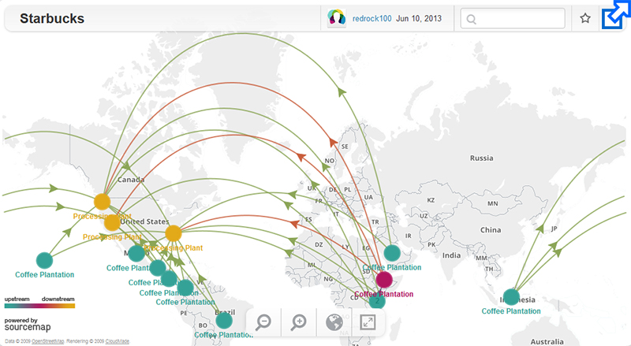

Definition
[https://drive.google.com/file/d/1MI2rcE07L8Qwh4kzA6it9F7Gjyxfsaht/view?usp=sharing Coffee Video]
What is coffee?
- A drink made from the roasted and ground seeds (coffee beans) of a tropical shrub
- The shrub of the bedstraw family that yields the coffee seeds, two of which are contained in each red berry. Native to the Old World tropics, most coffee is grown in tropical America.
Supply Chain Overview

- “The ideal conditions for coffee trees to thrive are found around the world in along the Equatorial zone called “The Bean Belt,” located between latitudes 25 degrees North and 30 degrees South. Finicky Arabica grows best at high altitudes in rich soil, while the heartier Robusta prefers a higher temperature and can thrive on lower ground.” - National Coffee Association
- The majority (80%) of coffee produced is done through smallholder farming all over the world; some of the largest producers of coffee include: Brazil, Colombia, Vietnam, Indonesia, Ethiopia, Kenya, Guatemala and Mexico.
Recent & Relevant News
Legal Issues & Major Controversies
Mapping the Supply Chain
Supplier Engagement Model
Governance
Benchmarks
| Brand | JAB holding company | Starbucks | Nestle | JM Smucker Co. | McCafe |
| Owned Brands | Parent company for 55+ coffee brands, including majority stakes in Peet's, Maxwell's House, Stumptown, Panera, & Keurig | In addition to Starbucks brand, owns Seattle's Best Coffee & Torrefazione Italia Coffee | Nespresso, Nescafe, Starbucks (at home) | Dunkin (at home), Foldgers | Owned by McDonalds |
| Primary Sales Regions | Corporate headquarters in Germany and Netherlands; Sales in 100+ Countries | Corporate headquarters in US, Sales in 80+ countries | Corporate headquarters in Switzerland, sales in 190+ countries | Headquarters in US, sales in 30+ countries | Corporate Headquarters in US, sales in 118+ countries world wide |
| Year Founded & Est Employees | Founded in 1828, no data on employee estimates | Founding in 1971, estimated 346,000 employees worldwide | Founded in 1866, estimated 291,000 employees worldwide | Founded in 1897, estimated 7,140 employees | McCafe Founded in 1993 |
| Sales Channels | Wholesale, Grocery, At-Home | Wholesale, Grocery, At-Home | Wholesale, Grocery, At-Home | Wholesale, Grocery, At-Home | Wholesale, Grocery, At-Home |
| Supply Chain | Vertically Integrated coffee procurement as well as Contract Manufacturing Partners | Vertically Integrated coffee procurement as well as Contract Manufacturing Partners | Vertically Integrated coffee procurement as well as Contract Manufacturing Partners | Vertically Integrated coffee procurement as well as Contract Manufacturing Partners | Less readily available information on supply chain and procurement for coffee specifically |
| Insights Into Market Share | - Combined with Starbucks and Dunkin Donuts (not Dunkin at home) owns 4 out of 5 coffee shops in US market - Estimated 16% of at-home global coffee market | - 36.7% of US Coffee Market - 2nd place for at-home ground coffee sales in US with 12% market share | - Nespresso and Nescafe combined control 23% of at-home global coffee market | - Folgers leads at-home ground coffee sales in US with 25% market share - Dunkin' is 5th in at home ground coffee sales in US | - Hard to find coffee specific market share, McDonald's brand name makes McCafe a less-obvious - but competitive - player in coffee market |
| Commitments to Environmental Responsibility | -Corporate Sustainability based on UN Sustainable Development Goals -Own brands like Stumptown that are B-Corps | - Partnerships with Conservation International and founding member of Sustainable Coffee Challenge | - Member of Sustainable Coffee Challenge with Conservation International - Have AAA Sustainable Quality Program | - Part of Sustainable Coffee Challenge with Conservation international - Have laid out specific goals related to emissions and packaging waste reduction - Site regulation by Consumer Goods Forum and Stewardship Index of Specialty Crops | - Corporate Sustainability based on UN Sustainable Development Goals - Partnership with Conservation International - Part of Sustainable Coffee Challenge - Rainforest Alliance |
| Commitments to Social Responsibility & Ethical Business Ethics | -Supplier Code of Conduct & \"Speak-up Policy\" -leading brands like Peet's partner with Enveritas for social responsibility and farmer support | - Invested $100 million in collaborative farmer programs known as Coffee and Farmer Equity (C.A.F.E.), - Site 99% ethically sourced coffee | - Has parent company and brand level sustainability commitments - Primary communication surrounding ethics focus on equality at the farm level | - Have Global Supplier Code of Conduct with audit by 3rd Party Firm - Working towards 100% responsibly sourced coffee by 2025 | - Partnered with with Conservation International to launch McCafe sustainability program - Have goal of 100% responsibly sourced coffee by end of 2020 |
| Transparency | - Have easily accessible annual CSR report available at holding company and umbrella brand level | - Easily available CSR reports - \"Open-source\" philosophy to share what it learns with industry competitors - Highlights their reliance on trust and strong relationships throughout supply chain, i.e. shared vendor scorecard | - Easily available CSR reports - available supply chain disclosures - Provide lots of information on supply chain and sourcing practices | - Easily accessible annual CSR report - Least clarity of sourcing transparency compared to other brands evaluated | - Easily accessible sourcing information - Harder to find but available CSR focused report - Company reputation largely associated with fast food industry |
| PR & Reputation | - Little-known from a consumer perspective that holding company owns family of small coffee lines - 2018 publicity for being 'secretive' conglomerate consolidating US coffee industry | - One of the most well known brands worldwide - Named as 5th most admired company by Forbes in 2018 - Positive reputation for employee education programs | - Major global CPG company that has faced supply chain scandals in the past - Often seen has one of the most hated companies in the world, largely due to infant milk controversies and poor labor practices - Repeated scandals surrounding poor business ethics | - Long standing US CPG company - Reputation not overtly associated with coffee or sustainability | - Reputation largely associated with parent company McDonald's global reach and reputation |
Monitoring
- Organic: Certified by the USDA National Organic Program. Standards impact type of crop (no GMO), managing pests, improvement in biodiversity, etc.
- C.A.F.E. practices (Starbucks): Developed with Conservation International; Guidelines provide comprehensive set of social, economic, environmental and quality guidelines that dictate how the coffee should be ethically sourced. Third-party inspection agencies, overseen by SCS Global Services, conduct C.A.F.E. audits of farms seeking approval (process happens every 4 years)
- Rainforest Alliance & UTZ: The two certifications merged in 2018. Standards include: protecting ecosystems, conserving water, soil, and forest, implementing shade management, providing fair treatment and good conditions for all workers, maintaining positive relationships with local communities, establishing an integrated system of waste management. Risk profile data is collected from brands at registration, and brands participate in a mandatory risk analysis to comply with the standard requirements. In collaboration with the Rainforest Alliance, Nestle created the Nespresso AAA Sustainable Quality Program to help smallholder farmers with quality, productivity and social/environmental impact.
- Fair Trade: Pays farmers and above-market price for coffee if they meet labor, enviro, and production standards. Fair Trade certification requires regular evaluation by independent auditors to ensure requirements are met. Audits are conducted yearly. Requirements increase YoY.
- 4C Certification: Sets standards for economic, social and environmental practices in the growing, processing and trading conditions
Verification
- Associations include:
- International Coffee Organization
- Founded in 1963, the ICO is the main intergovernmental organization for coffee, bringing together exporting and importing governments to deal with challenges facing the industry through international cooperation. Members represent 98% of world coffee production and 67% of world consumption.
- London Declaration of 2019: Current coffee market prices do not allow growers in most producing nations to cover production costs.
- Major signatories (including Nestlé and Starbucks) committed to promoting competitive and sustainable production, fostering responsible and equitable growth, promoting responsible consumption, the establishment of market and supply chain information systems to support transparency efforts on living income, and more.
- National Coffee Association of USA
- Founded in 1991, the NCA was the first coffee association in the US. They identify as the leading advocate for the US coffee industry and represent over 90% of the coffee commerce in the country. Their focus is on lobbying, market research, and consumer information.
Reporting
Specialty Coffee Association
- As a trade association, SCA’s purpose is to foster global coffee communities to support activities to make coffee a more sustainable,
- equitable, and thriving activity for the whole value chain. Their members span from coffee farmers to baristas and roasters.
- World Coffee Research
- A non-profit organization based in California, World Coffee Research is focused on growing, protecting, and enhancing supplies of
- quality coffee while improving the livelihoods of the families who produce it. The organization is mainly focused on improving the quality
- of coffee and safeguarding its future by, researching cutting-edge tech, coffee genetic improvement, and new varieties
- Latin American and Caribbean Network of Fair Trade Producers (CLAC)
- CLAC is the network that represents all organizations certified as “Fairtrade” in Latin America and the Caribbean.
Life Cycle Assessments
- Coffee Cultivation - A trend across various data and sources show the coffee farming and cultivation process as one of the largest hotspots throughout a cradle-to-grave lifecycle. For Arabica beans in some regions, it has been estimated that 79% of the GHG impact from the cultivation process is due to fertilizers. While using organic fertilizers is one of the best mitigation scenarios for GHG, the cultivation process remains a hotspot in the value chain. The key inputs of this stage are fertilizers, compost, manure, and electricity. The primary outputs are coffee cherries.
- Coffee Processing - While there was ample focus on coffee impact at the farming stage, multiple data sources cited that there was little standardized data or assumptions for the coffee processing stage. Notably, many cited this as one of the most water-intensive stages of the life cycle, with the majority of coffee cherries undergoing a wet process that results in the green bean being separated from the rest of the cherry. The wet process has multiple steps to it before beans are ready to be transported for roasting.
- Roasting & Packaging - While coffee is often exported from where it is grown in the southern hemisphere to the northern hemisphere for roasting, the primary data source evaluated for this LCA looked at Arabica beans produced and consumed in Thailand, so export emissions were moot. Since ground coffee was the functional unit, the only packaging looked at was bags for coffees consisting of a range of aluminum and petroleum-based plastics.
- Distribution - In the primary study referenced for this analysis, the packaged coffee beans' distribution and transportation were modeled using EcoInvent. Interestingly, distribution is looked at as a sum across the lifecycle instead of chronologically between stages. When looking across the value chain within this study's bounds, distribution proved to be negligible in terms of CO2 equivalent emissions, especially compared with the cultivation, processing, and consumption stages
- Brewing Method - The three brewing methods looked at in this LCA were an electric coffee maker, a stovetop espresso maker or Moka pot, and pour-over coffee with water heated from an electric kettle. This allowed for the comparison of three various consumption methods that all required some electricity usage. The brewing stage ended up having one of the largest environmental impacts, largely due to the electricity usage across brewing methods.
Other Challenges & Impacts
- Cultivation contributes the most to eco-toxicity (7 tons of copper) and eutrophication (excessive phosphorus causes increased growth of algae which can result in decreased levels of oxygen, endangering animal life).
- Irrigation is by far the largest user of water in the coffee lifecycle.
- Consumption contributes the most to air acidification, aquatic eco-toxicity, human toxicity,
- greenhouse effect, depletion of ozone layer and photochemical oxidant formation.
- Contributions made by transport are very limited but influence photochemical oxidant
- formation, greenhouse effect, human toxicity, and air acidification (after consumption and
- cultivation) and the depletion of ozone layer and aquatic eco-toxicity (after consumption but
- before cultivation).
- The contributions of the processing and packaging stages are almost negligible.
- Disposal contributes to aquatic eco-toxicity (after consumption) and to eutrophication (after
- cultivation). Coffee processing plants often discharge waste into rivers.
Innovations
Conclusions
- The greatest impacts are in the Consumption and Cultivation stages.
- Environmental improvements could be achieved by choosing organic and/or sustainable
coffee farms as suppliers and alternatives to traditional cultivation (such as shade-grown
production to reduce pollution of pesticides and fertilizers, preserve forestry, create habitats
for migrating birds and cultivate other plants/fruits/flowers).
- Air emissions are due to fuel consumption during vehicle transportation and combustion of natural gas in the roaster. Improvements in fuel consumption would enable air emissions to be lowered.
○ Additionally, alternatives to the use of diesel tractors during coffee cultivation can help reduce air
emissions from farming equipment.
- Coffee chaff (disposed by roasting companies) and coffee grounds (disposed by consumers)
make up the largest proportion of solid waste (apart from packaging materials). Recycling
and composting efforts can help reduce this waste.
Sources and References
https://www.nestle.com/brands/coffee
https://corporate.mcdonalds.com/corpmcd/scale-for-good/our-food/coffee.html
https://www.jabholco.com/corporate-responsibility
https://www.jmsmucker.com/brands-you-love/coffee